뉴스
기술의 변화, 매일 한눈에.
카메라 · 스마트폰 · AI, 해외 테크 소식을 모아 전합니다.
최근 발행2026-11-27
새로 들어온 소식
최신 뉴스
전체 4,637개 기사
vivo의 첫 바 타입 스마트폰, 카메라 경험 강조할 것으로 예상

Counterpoint: 2026년 3분기 미국 스마트폰 출하량 전년 대비 9% 감소, Apple 점유율 57%로 상승
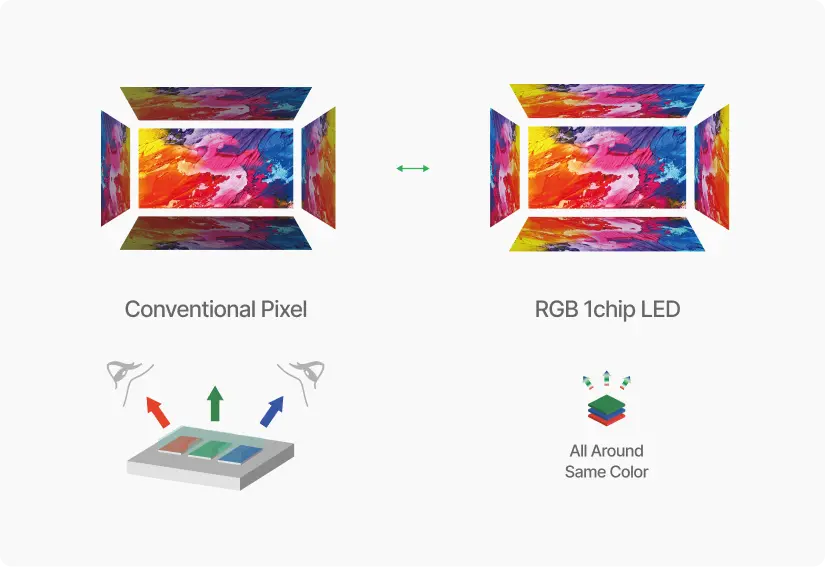
세계 최초 RGB 단일 칩: 서울반도체, 피크 3000니트, DCI-P3 색역 100% 커버하는 새로운 LCD 백라이트 기술 양산
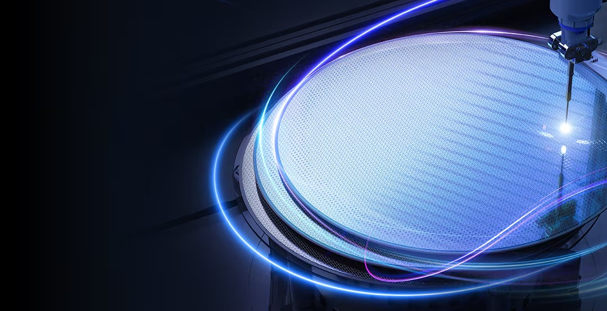
Samsung, 2028년 반도체 공장 로봇 내부 배치 위해 로봇팀 신설
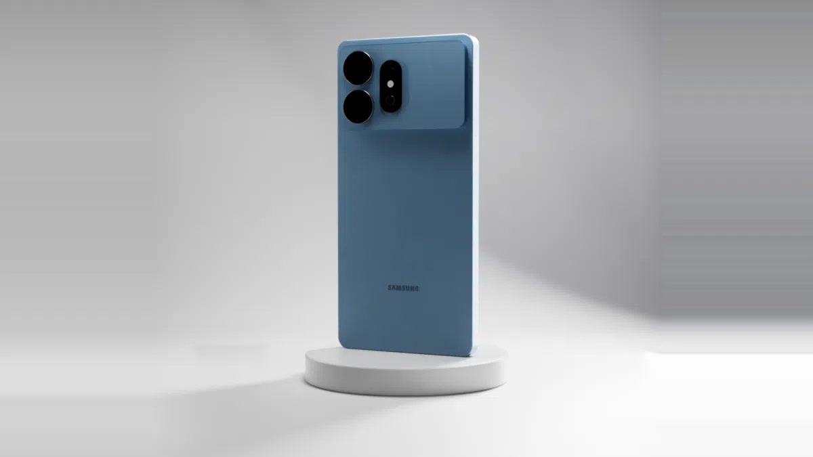
Samsung Galaxy S27 Ultra 스마트폰 목업 유출: 가로 배열 카메라, 60W 유선 충전 지원
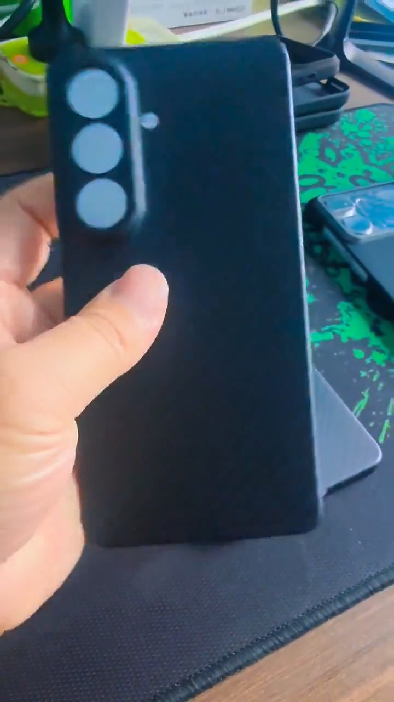
Samsung Galaxy S27 Pro/Ultra 스마트폰 케이스 추가 유출, 후면 카메라 모듈 가로 배열로 변경

realme 17 Pro 스마트폰 공개: 10000mAh 배터리, 65W 충전, Dimensity 7300 칩셋 탑재
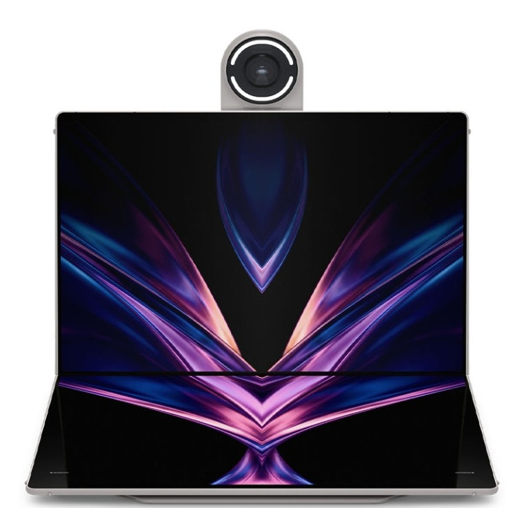
Lenovo 신형 Yoga Book 공개: 듀얼 스크린 노트북, 대형 외부 카메라 탑재

iPhone 20 Pro 및 Pro Max: 20주년 기념 iPhone에 대해 알려진 모든 것
Honor, 해외에 Choice T20 스마트폰 출시: Unisoc T7250 + 4GB RAM, 7000mAh 배터리 탑재
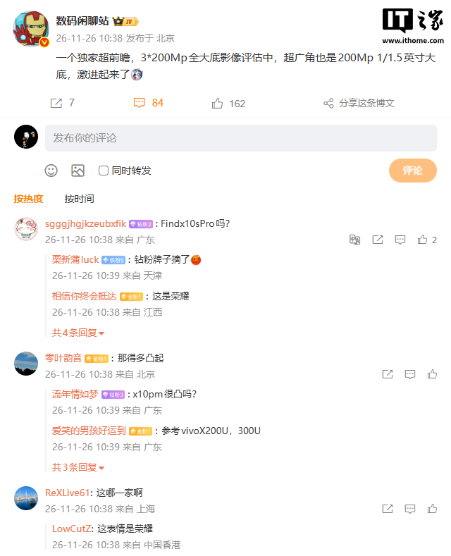
Honor, 3개 200MP 대형 센서 이미지 평가 중인 것으로 알려져
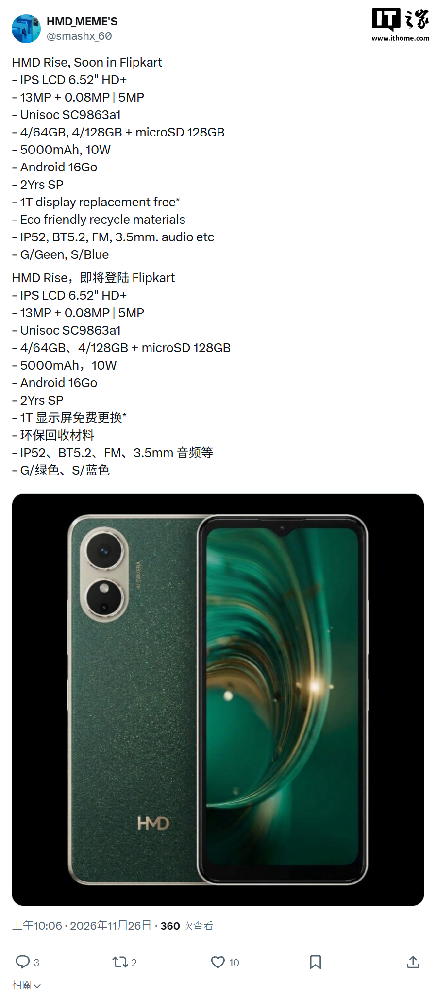
HMD Rise 스마트폰 공개: 6.52인치 720P LCD 디스플레이, 4GB RAM
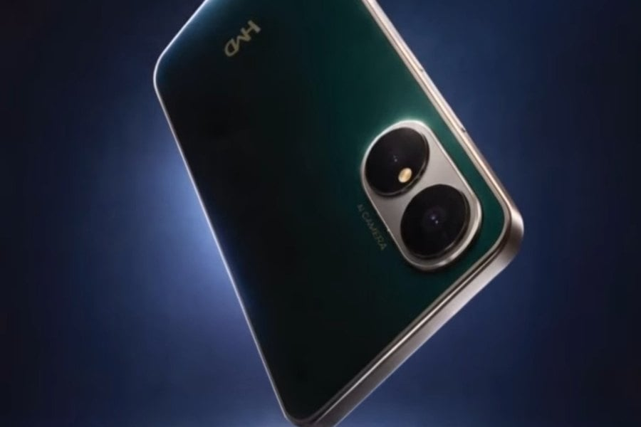
HMD Rise, HD 디스플레이 및 13MP 카메라 탑재 유출
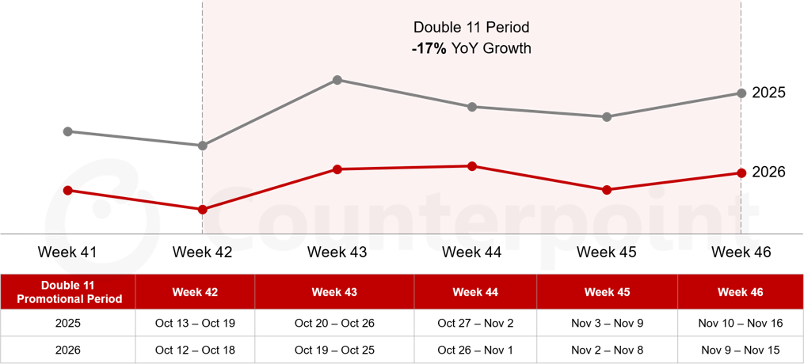
카운터포인트: 중국 광군제 스마트폰 판매량 전년 대비 17% 감소, 판매량 상위 5개 모두 Apple iPhone, Huawei 유일하게 역성장 속 성장
iPhone 16 AI 기능 홍보, 과장 광고 의혹으로 Apple 한국에서 공식 조사 착수

Apple iPhone 18 Pro 등 잠금화면이 '광고판'으로 변질: 해외 다수 앱, 불법 프로모션 알림 푸시로 피드백 접수

스마트폰의 딜레마 재현, 물리적 AI의 대규모 전환점은 어디인가?
Apple, 음란물 콘텐츠로 MiniMax AI 챗봇 앱 Talkie 삭제
2027년 Apple, Samsung, Xiaomi, OPPO, vivo, Huawei 등 스마트폰 제조업체의 출하 목표가 확정되었으며, 대부분의 제조업체가 예상치를 하향 조정했습니다.
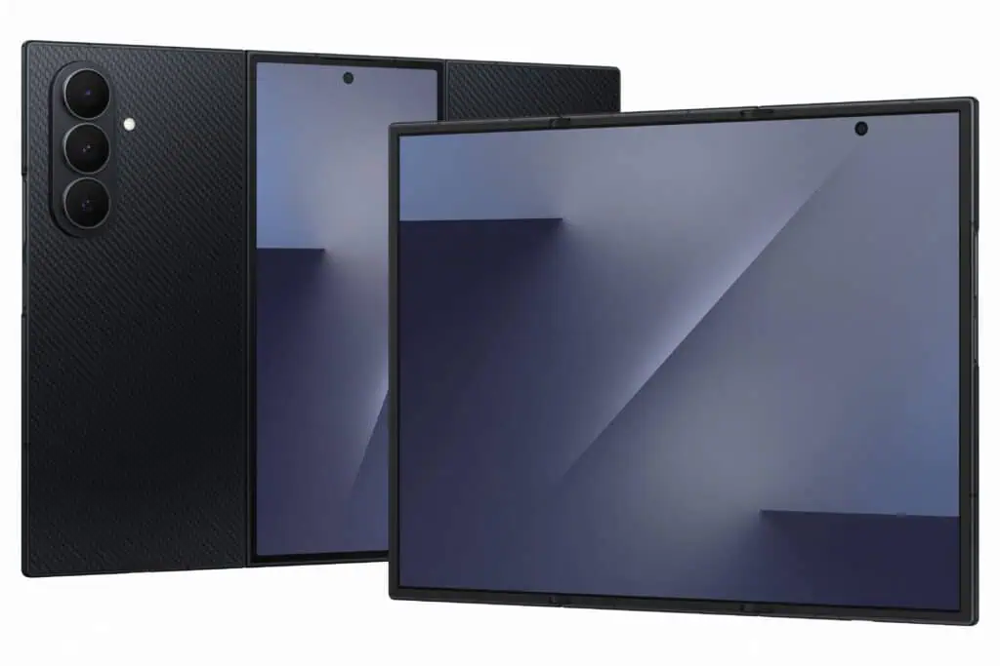
Samsung 트리플 폴더블 스마트폰 Galaxy Z Trifold 2 유출: 코드명 Q9m, Z Fold9 Ultra 기반 개발
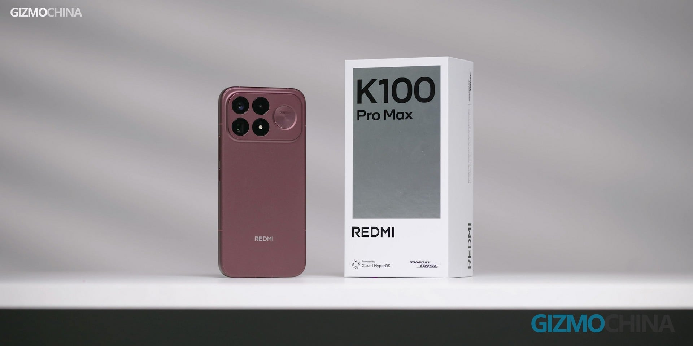
Redmi K100 플래그십, 내년 스냅드래곤 8 Elite Gen 6 및 50MP 트리플 카메라 탑재하여 출시될 수도
검색 결과가 없습니다
다른 검색어를 입력하거나 필터를 초기화해 보세요.